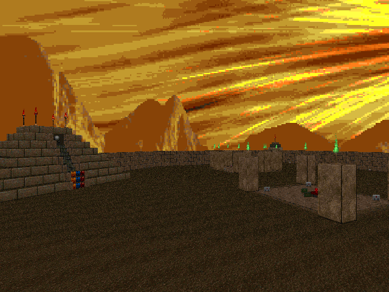

DOWNLOAD LINKS


| Year | 2024 |
| IWAD | Doom II |
| Source port | MBF21-compatible |
| Game mode(s) | Single-player, coop |
| Map(s) contributed | MAP17 |
Brisk is a set of 30 MBF21-compatible speedmaps, birthed as a community project hosted by myolden.
Mappers interested in contributing claimed a slot in one of the six episodes, each with its own theme, and had
24 hours to submit a complete map. And Yours Truly had the pleasure of participating in the shenanigans.
MAP17, titled "Khaldun", is my contribution to Brisk's Egypt episode. Don't let the relatively small monster
count fool you - this one bites harder than your average MFG38 map! In Khaldun, the objective is simple on the
surface: pick up the three skull keys and use them to access the exit. The catch is that picking up each key
will lock you into an arena fight, and within the tight confines of those fights, you'll have to maneuver around
the monsters carefully. Roaming monsters in the outdoor area provide some extra spice. The map was made in a
total time of about 3 hours.